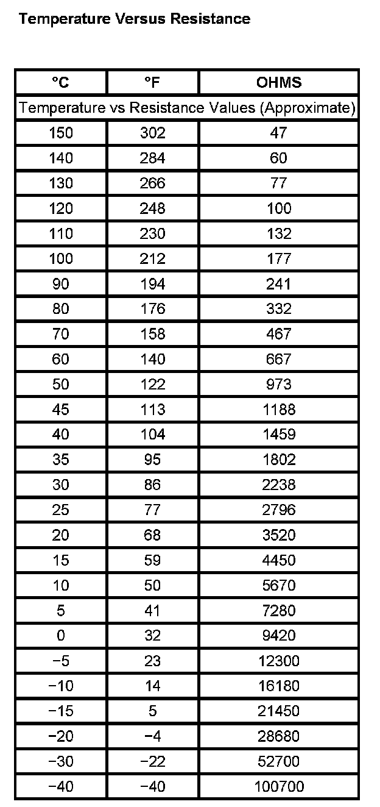

Operation CHARM
: Car repair manuals for everyone.
Home
>>
Cadillac
>>
2007
>>
Escalade ESV AWD V8-6.2L
>>
Repair and Diagnosis
>>
Engine, Cooling and Exhaust
>>
Cooling System
>>
Sensors and Switches - Cooling System
>>
Engine - Coolant Temperature Sensor/Switch
>>
Coolant Temperature Sensor/Switch (For Computer)
>>
Specifications
Coolant Temperature Sensor/Switch (For Computer): Specifications
Temperature Versus Resistance:
